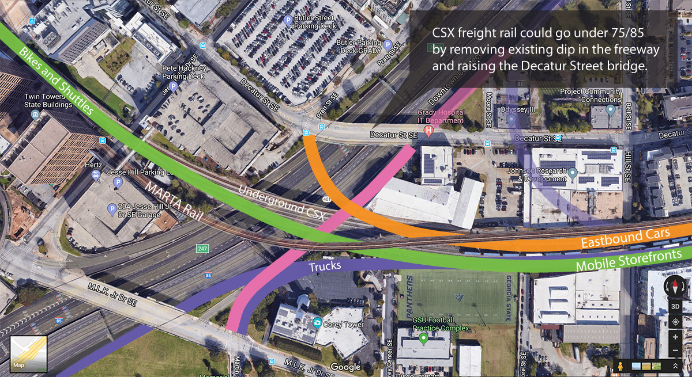
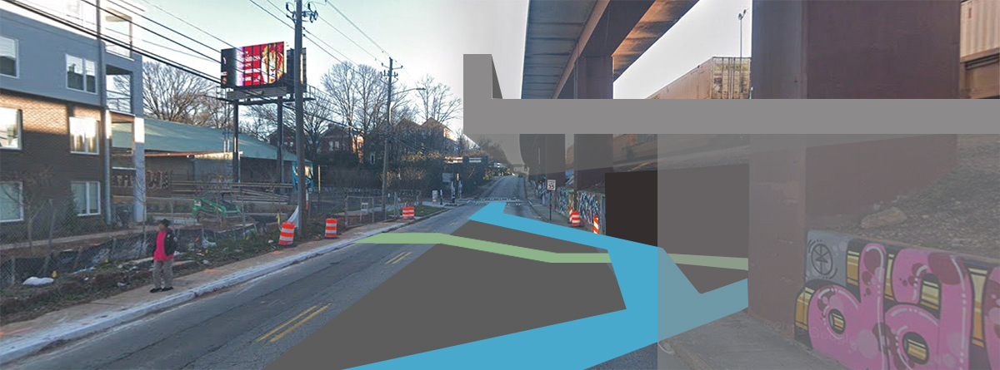
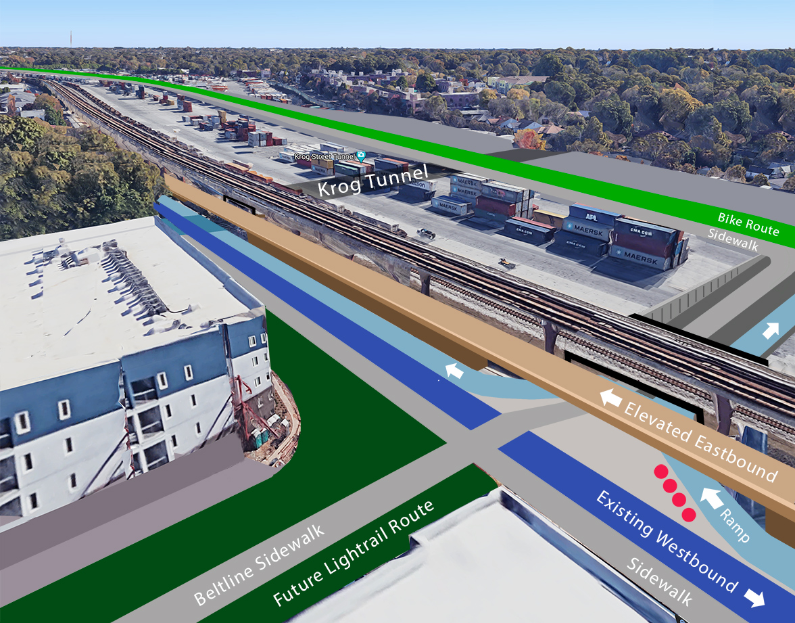
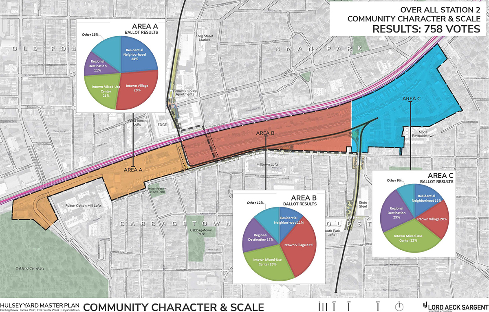
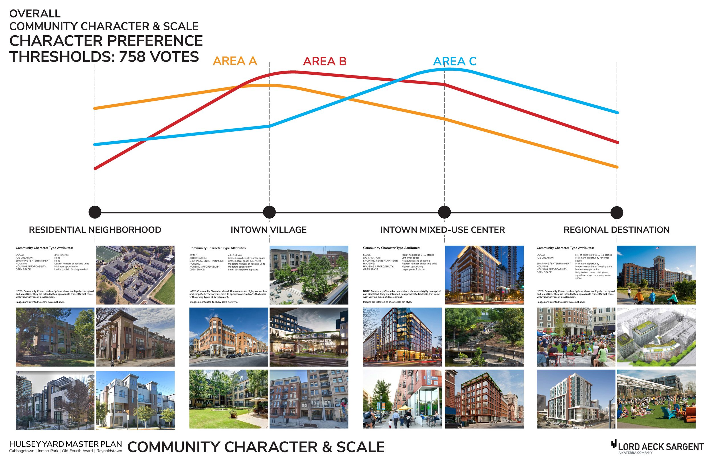
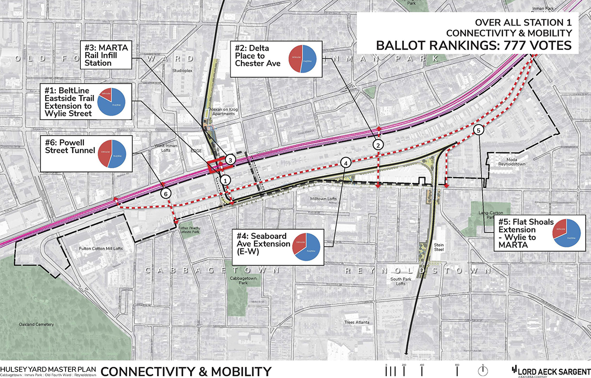
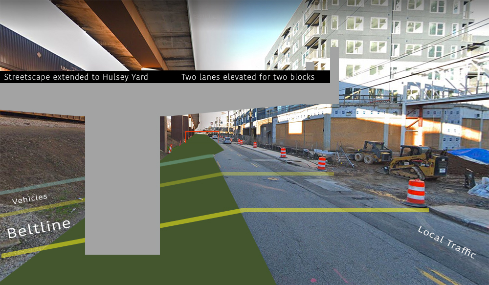

A portion of Dekalb could be elevated to provide a seamless streetscape over underground freight.

The freight rail bridge at the I75/I85 freeway could be replaced with a rail tunnel, while raising the current dip in the freeway. The Decatur Street freeway bridge could be raised and additional connecting bridges (or a freeway cap) could be added for bikes, shuttles and cars once the freight rail and truck routes are moved into narrow trenches.
With this approach, Krog Tunnel would have a traffic light in the middle of the tunnel. Graffiti artists could paint a portion of the truck tunnel to make up for lost painting space at the intersection within the tunnel.
Similar covered intersections would occur at Hill Street and Grant Street. Boulevard would go over the top of the yard.
The existing freeway entrance ramp from MLK could include an entrance to the covered truck route which would descend to the right. A north-bound freeway access route (pink above) could travel over the truck route to a freeway access ramp on the north side of Decatur Street. Long-term, a northbound truck route could use a 200 meter tunnel from the covered trench to the freeway. Short-term, westbound trucks could exit the covered trench route at Hill Street to access the northbound Decatur Street ramp.
Avoiding a Long Trench for Beltline Rail adjacent to Krog Tunnel
By elevating one lane of DeKalb Ave at Krog Tunnel,
the Beltline rail could go under the existing CSX rail in the short-term
without using a deep tunnel under DeKalb Avenue.
The Beltline could continue straight under a new rail bridge, then curve upward to the left to emerge in the middle of the yard. This approach would would avoid the steep incline that would occur if the Beltline route went under DeKalb avenue, as is currently planned. Another option would be for CSX to shift their train traffic to the south tracks to make room for a new underpass west of Krog Tunnel. Both approaches would eliminate the bottleneck at Krog Tunnel.

Looking east toward Krog Tunnel - An elevated eastbound lane could be level with a future Husley Yard streetscape. The eastbound lane could eventually reside on the south side of the elevated Marta rail once the CSX rail is moved into a cut-and-cover trench.

The eastbound middle lane (light blue above) could provide a right-turn lane into Cabbagetown under the elevated lane. A speed-absorbing barrier could be used to protect pedestrians (red dots above). Local eastbound traffic could continue around the incline-island to access northbound Krog Street.
Ideally the east-west bike path would be separate from both the Beltline sidewalk and Cabbagetown roadway.
Illustrator file
Results from
2019 pop-up studio community survey
provided by the Lord Aeck Sargent:



• New north-south through street connecting Delta Place to Chester Avenue
• New north-south through street connecting Waddell Street to Pearl Street
• New north-south street connecting new development to Dekalb Avenue (near Bradley Street on the western portion of the site)
Elevated DeKalb Through-Way Concept
Prepared by Loren Heyns, Oct 2019
The south two lanes of DeKalb Ave at Krog Tunnel (left side below) could be elevated for a couple blocks to allow through-traffic to go over the Beltline rail, without digging a deep north-south Beltline trench.

Phase 1: Raising two lanes of DeKalb Ave at Krog Tunnel
The Beltline would travel under the current CSX rail west of Krog Tunnel.
A lower, local route the existing street level would be accessible from Krog Street. A new vehicle
and bike route would reside adjacent to the Beltline.
A new traffic light would be added at the local Beltline crossing.
The two-way lower street would turn into one-way west of the Beltline to merge with the through-way. (Image above)
An incline would start under the elevated south two lanes of DeKalb Ave to go under the existing CSX rail.
After passing under the CSX rail, the Beltline would climb a hill and turn east to go over Krog Tunnel.
Southbound car and bike traffic into Cabbagetown would use the same trench, but the west side of the trench would connect straight into Cabbagetown rather than going up the hill.
The northeast side of Krog tunnel would have an eastbound access route that merges with the elevated DeKab through-way as it returns to the existing street level.
The elevated DeKalb Through Way would be 20" away from Krog Tunnel, so the historic signage area would be visible from above and below.
Phase 2: Lowering CSX Rail 50 Feet
The rail would run under Krog Tunnel and the 75/85 freeway.
No changes would be needed to the routes described above when lowering the CSX Rail
to create a new pedestrian-focused streetscape from Downtown to Decatur.
Beltline trench alignment - 2016 by Klaus Roesch
reduce vibration. The 50 year lifespan of infinitely-recyclable railroad ties made from car tires and hard-to-recycle plastics avoids the burning of toxic creosote-treated ties. Neighbors could also request mining of any available granite beneath the yard using a quiet product like
Crackem or Expando. The extraction and sale of deep granite could provide a space for dirt from trench work, along with areas for water and material storage.
Hulsey Yard Master Plan - 2019 Neighborhood Recommendations
Glenwood Complete Streets - Transit Lanes and Family-Friendly Biking
Grant Park Gateway - Evolution of the Parking Deck at Zoo Atlanta
Mobile Storefronts - On Demand Retail / Toyota e-Palette
{kind=link}
{kind=link}
{kind=link}
{kind=link}
{kind=link}
{kind=link}
{kind=link}
{kind=link}
{kind=link}
{kind=link}
{kind=link}
{kind=link}
{kind=link}